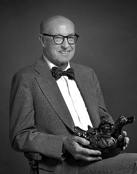

UC Berkeley Press Release
George M. Foster, noted anthropologist, dies
BERKELEY – George McClelland Foster Jr., a University of California, Berkeley, anthropologist generally known as the founder of medical anthropology and for his pioneering contributions on peasant societies and long-term field research documenting societal change, died May 18. He was 92.
|  George Foster (G. Paul Bishop photo) |
During a career spanning more than six decades, Foster established himself as one of the most distinguished anthropologists of his generation. Key areas of his work included historical reconstruction, social roles and structure, material and visual cultures, international public health, ethnography and field methods, and pottery technology.
He also earned a reputation as an outstanding scholar for his theories such as the "principle of limited good" in times of scarcity, as well as for his work on medical systems based on the concept of the human body's need for a temperature balance between hot and cold.
Foster authored nearly 300 publications, including more than a dozen books on theory, method and ethnography. His major works include anthropological classics such as "Empire's Children" (1948); "Culture and Conquest" (1960), about the Spanish influence on contemporary Spanish-American peasant cultures; "Traditional Cultures and the Impact of Technological Change" (1962), long considered the bible of applied anthropology; and "Tzintzuntzan: Mexican Peasants in a Changing World" (1967), about a rural community in central Mexico that he studied for over half a century.
"He was a giant in his field," said Ira Jacknis, a research anthropologist and specialist in the history of anthropology at UC Berkeley's Phoebe Hearst Museum of Anthropology. "He was the old-fashioned Americanist anthropologist trained to do everything."
"Foster had the ability to see something, make it into a researchable question and see it through," said Elizabeth Colson, a UC Berkeley anthropology professor emerita and Foster's longtime friend and colleague.
Jacknis agreed, having worked with Foster on an online exhibit of Foster's vast collection of more than 4,000 photos along with field notes and other materials documenting life in Tzintzuntzan (http://hearstmuseum.berkeley.edu/exhibitions/tzin/44.html). Foster is credited with being largely responsible, directly and indirectly, for building the museum's important Mexican collections, which were partly reflected in the Hearst museum's recent "Tesoros Escondidos" ("Hidden Treasures") exhibit.
"Foster would never have claimed he was a visual anthropologist," said Jacknis. "But he really had a great eye, and his photos are beautiful images that document the culture so well. Then there are his field notes, which are wonderful to read - they're like novels."
The Sioux Falls, S.D., native once said that when he was young, his parents expected him to take his place in the family meatpacking business. But he opted to pursue engineering at Harvard University for a year, and then at Northwestern University in Iowa. There, he instead became captivated by the relatively new field of anthropology under pioneering anthropologist Melville Herskovits.
Foster earned his B.S. degree in anthropology at Northwestern in 1935 and began doctoral studies at UC Berkeley under early pioneer anthropologists Robert Lowie and Alfred Kroeber. He conducted field research among the Yuki Indians of Mendocino County in California and the Sierra Populuca Indians of Veracruz, Mexico.
During a five-week holiday break in 1936, Foster vacationed in Mexico, visiting Mexico City, Oaxaca, Veracruz, Taxco and Guadalajara. He came home determined to specialize in the anthropology of Mexico.
After earning his Ph.D. in anthropology at UC Berkeley in 1941, Foster taught sociology at Syracuse University in New York and lectured about anthropology at UCLA. He next worked as an analyst in the office of Inter-American Affairs in Washington, D.C., and as director at the Smithsonian Institution's Institute of Social Anthropology.
He returned to UC Berkeley in 1953 as a professor of anthropology and also lectured in public health. Foster served as acting director of the campus's Robert Lowie Museum of Anthropology, which today is the Hearst museum, from 1955-1957.
For two terms, Foster was chair of UC Berkeley's anthropology department and "always put the department first," said Colson.
She said that recent e-mails from some of Foster's former students noted the integrity and high standards that he imparted to them.
Upon his retirement in 1979, Foster received the Berkeley Citation, the campus's highest honor.
In 1997, the department's library was named in honor of Foster and his wife, Mary, a linguistic anthropologist who was his research collaborator. She died in 2001.
Over the years, George Foster served as a consultant on international health for numerous agencies such as the World Health Organization, UNICEF and others, and he traveled widely throughout Asia, Africa and Latin America.
Foster was elected president of the American Anthropological Association in 1970. He was elected to the U.S. National Academy of Sciences and the American Academy of Arts and Sciences. He received the Malinowski Award from the Society for Applied Anthropology, a Guggenheim Fellowship and a Lifetime Achievement Award from the Society for Medical Anthropology. Foster also received an honorary doctorate from Southern Methodist University.
Foster slowed down somewhat in recent years due to Parkinson's disease, but still kept an active schedule. Two years ago, he traveled to Tzintzuntzan and to China. Last summer, he took an Alaskan cruise. In the week before his death, he kept a long-honored Wednesday luncheon date at The Faculty Club with a few of his fellow UC Berkeley emeriti anthropologists.
Foster is survived by his son, Jeremy Foster of Basalt, Colo., a daughter, Melissa Bowerman from the Netherlands, daughter-in-law Angela Foster, son-in-law Wijbrandt van Schurr, five grandchildren and four great-grandchildren.
UC Berkeley's anthropology department plans to establish a George M. Foster Memorial Fund. A campus memorial service is anticipated in late summer or early fall.